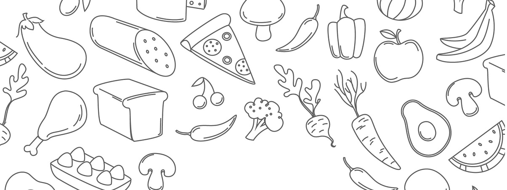

En el mundo de las recetas y los sabores , cada plato cuenta una historia.
Soy Gabriela , y mi viaje culinario comenzo como un tejido con ingredientes frescos ,
pasion por la comida y un gran deseo de compartir mi amor por la comida con el mundo.
¿Queres ser parte y acompañarme en esta aventura?